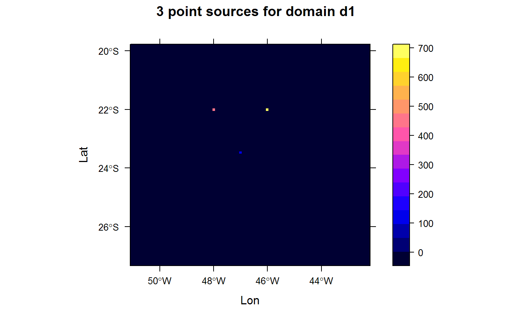

Transform a set of points into a grinded output
pointSource(emissions, grid, verbose = TRUE)
| emissions | list of points |
|---|---|
| grid | grid object with the grid information |
| verbose | display additional information |
a raster
gridInfo and rasterSource
#> Grid information from: C:/Users/under/OneDrive/Documents/R/win-library/4.0/EmissV/extdata/wrfinput_d01p = data.frame(lat = c(-22,-22,-23.5), lon = c(-46,-48,-47 ), z = c(0 , 0, 0 ), emission = c(666,444,111 ) ) p_emissions <- pointSource(emissions = p, grid = d1)#> grid position lat= -22.010806627171 lon= -46.0152584808041 #> grid position lat= -22.010806627171 lon= -47.9944115841027 #> grid position lat= -23.4723500487625 lon= -47.0048350324534# \donttest{ sp::spplot(p_emissions,scales = list(draw=TRUE), ylab="Lat", xlab="Lon", main = "3 point sources for domain d1")# }